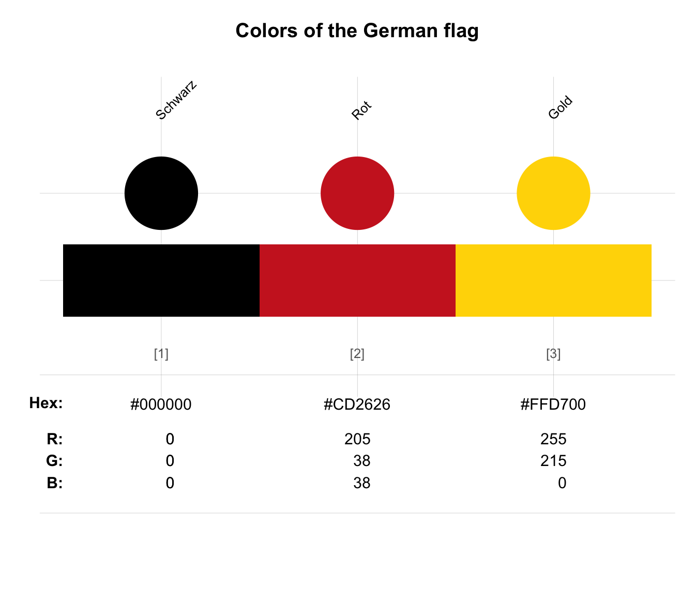
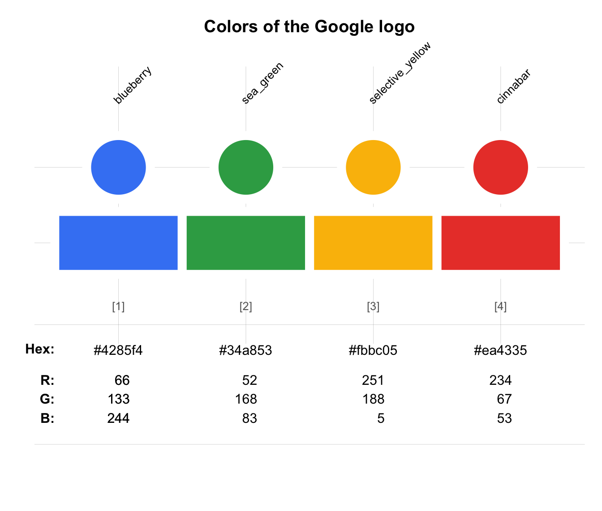
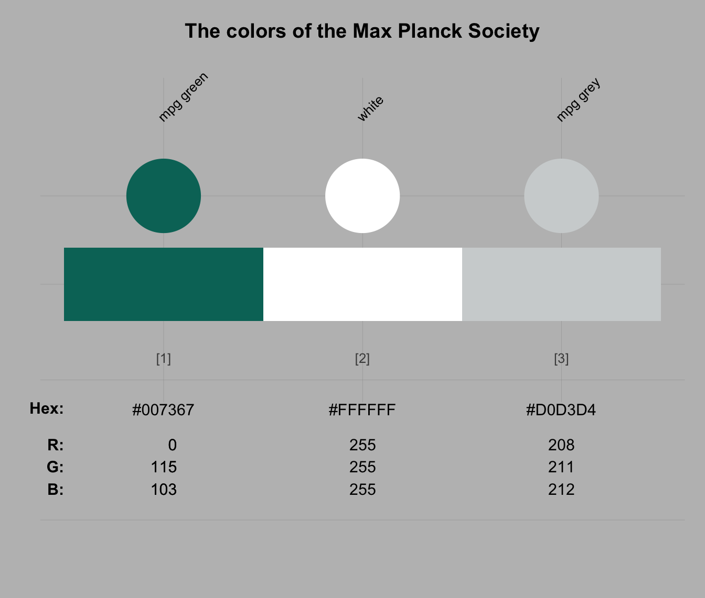
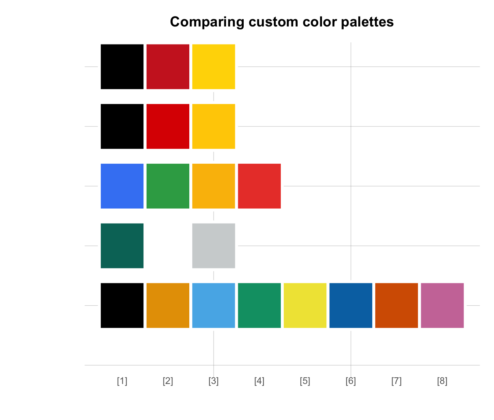

newpal allows defining new color palettes
(as data frames).
newpal(col, names = NA, as_df = FALSE)A required vector of colors (specified by their R color names, HEX codes, or RGB values).
An optional character vector of names.
Default: names = NA, yielding numeric names.
Should the new color palette be returned as
a data frame (rather than as a vector)?
Default: as_df = FALSE.
seepal for plotting color palettes;
usecol for using color palettes;
simcol for finding similar colors;
grepal for finding named colors;
shades_of to defining shades of a given color;
ac for adjusting color transparency;
pal_unikn for the default uni.kn color palette.
Other color functions:
ac(),
demopal(),
grepal(),
seecol(),
shades_of(),
simcol(),
usecol()
newpal(col = c("black", "white"), names = c("dark", "bright"))
#> dark bright
#> "black" "white"
# Example: 3 ways of defining a new color palette:
# (1) From R color names: -----
pal_flag_de <- newpal(col = c("black", "firebrick3", "gold"),
names = c("Schwarz", "Rot", "Gold"))
seecol(pal_flag_de, main = "Colors in the flag of Germany")

# (2) From HEX values: -----
# (a) Google logo colors:
# Source: https://www.schemecolor.com/google-logo-colors.php
color_google <- c("#4285f4", "#34a853", "#fbbc05", "#ea4335")
names_google <- c("blueberry", "sea green", "selective yellow", "cinnabar")
pal_google <- newpal(color_google, names_google)
seecol(pal_google, main = "Colors of the Google logo", col_brd = "white", lwd_brd = 10)

# (b) German flag revised:
# Based on a different source at
# <https://www.schemecolor.com/germany-flag-colors.php>:
pal_flag_de_2 <- newpal(col = c("#000000", "#dd0000", "#ffce00"),
names = c("black", "red", "gold")
)
seecol(pal_flag_de_2, main = "Colors of the German flag (www.schemecolor.com)")
# (c) MPG colors:
pal_mpg <- newpal(col = c("#007367", "white", "#D0D3D4"),
names = c("mpg green", "white", "mpg grey")
)
seecol(pal_mpg, main = "Colors of the Max Planck Society")

# (3) From RGB values: -----
# Barrier-free color palette
# Source: Okabe & Ito (2002): Color Universal Design (CUD):
# Fig. 16 of <https://jfly.uni-koeln.de/color/>:
# (a) Vector of colors (as RGB values):
o_i_colors <- c(rgb( 0, 0, 0, maxColorValue = 255), # black
rgb(230, 159, 0, maxColorValue = 255), # orange
rgb( 86, 180, 233, maxColorValue = 255), # skyblue
rgb( 0, 158, 115, maxColorValue = 255), # green
rgb(240, 228, 66, maxColorValue = 255), # yellow
rgb( 0, 114, 178, maxColorValue = 255), # blue
rgb(213, 94, 0, maxColorValue = 255), # vermillion
rgb(204, 121, 167, maxColorValue = 255) # purple
)
# (b) Vector of color names:
o_i_names <- c("black", "orange", "skyblue", "green", "yellow", "blue", "vermillion", "purple")
# (c) Use newpal() to combine colors and names:
pal_okabe_ito <- newpal(col = o_i_colors,
names = o_i_names)
seecol(pal_okabe_ito,
main = "Color-blind friendly color scale (Okabe & Ito, 2002)")
# Compare custom color palettes:
my_pals <- list(pal_flag_de, pal_flag_de_2, pal_google, pal_mpg, pal_okabe_ito)
seecol(my_pals, col_brd = "white", lwd_brd = 5,
main = "Comparing custom color palettes")
